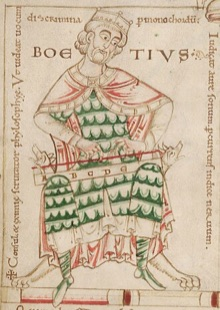

c. 477-524 · Faith and Reason
← The philosophy map · About Boethius
Can someone who has lost everything still be truly happy?
You have worked hard for years. You have a good job, a nice flat and lots of friends. Then, in one month, you lose your job, your savings and half your friends. Is your happiness gone too, or was it never really in those things? Fifteen hundred years ago, a Roman sat in a prison cell asking exactly that.
Read one part at a time. After each part, close your eyes and answer the question before you check.
Boethius was born in Rome around 477, into one of its oldest and most noble families. The Western Roman Empire had just fallen, and Italy was ruled by Theodoric, a Gothic king. Boethius was brilliant. He translated Greek philosophy into Latin and rose to become one of the king's most powerful officials. He had money, fame, a happy family and the king's trust. Life could hardly have been better.
Who ruled Italy when Boethius was a powerful official?
Then things took a sudden turn for the worse. In 523, Boethius defended another senator who was accused of plotting with the emperor in Constantinople. Soon Boethius himself was accused of treason. He always said the charges were false, but the king did not listen. Boethius lost everything: his position, his money and his good name. He was thrown into prison to wait for his execution.
Why was Boethius put in prison?
In prison he wrote The Consolation of Philosophy. In the book, he is writing sad poems about his bad luck when a tall, wise woman appears: Lady Philosophy. She tells him to stop complaining about Fortune. Fortune is a wheel, she says. It lifts people up and throws them down; that is its nature. Money and fame were never truly his. But no one can take away his mind or his goodness. Boethius was executed in 524.
According to Lady Philosophy, what can Fortune never take away?
Each word is hidden in a sentence. Read it aloud and say what you think the bold word means. Then reveal and compare.
In Boethius's view, which things could Fortune take from you, and which are truly your own? Decide together, then reveal.
Now you: explain the wheel of Fortune to a friend who has just had some bad luck. Speak for about a minute. Use the starters if they help.
A genie offers you a choice. Prize A: you will be rich and famous for the rest of your life, but you will never become any wiser or kinder than you are now. Prize B: you will have an ordinary income and nobody will know your name, but you will grow wiser and calmer every year.
Tap two cards. Use the timer to keep going, and use at least two of the phrases above.
No looking back. Answer from memory first, then check.
What did Augustine mean by a divided will?
What did Marcus Aurelius mean by the inner citadel?
What is Aristotle's golden mean?
From memory, out loud. Then check.
1. What did Lady Philosophy teach Boethius about Fortune?
2. Where and why did Boethius write The Consolation of Philosophy?
3. Who appears to Boethius in his book, and what does she do?
4. What does 'fleeting' mean? Give an example.